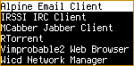

When you boot Salix Ratpoison, there is no graphical login screen: when you log in, you enter the Linux terminal. Log in as your normal user and type
startx
to start Ratpoison itself.
You should then see the Salix wallpaper, and a message will appear
briefly telling you how to view a list of commands. Type Ctrl-t
(C-t, in Ratpoison's own notation) then a question mark;
pressing any key takes you back to where you were before. There is
nothing to see (apart from the beautiful Salix wallpaper)! But it's
just as easy to set Ratpoison to work as with any more conventional
desktop.
To select an application from the menu, type C-t r, and
use the arrow keys to navigate (Vim's hjkl keys also
work). Right arrow (or l) accesses submenus (such as
"Network") and left arrow (or h) goes back up a level.
Right arrow or enter runs the application (if you open one by mistake,
don't worry, just type C-t r again - we will see how to
close windows and applications later).

Some common options are available directly at the top. The Vimprobable2 browser, for instance, can be found under Network but also by just selecting "Browser". Remember to use the keyboard and not the mouse! A third way to open it bypasses the menu altogether:
C-t v
You can create more shortcuts like this for applications you use a lot by adding them to the configuration file, which we will look at below.
apvlv, under Accessories, can be used to read pdf documents such as this guide. Also under accessories, "Unit conversion" starts the console application units, which will convert between a large range of scales, such as time, weight, or currency, including some quite unusual ones.